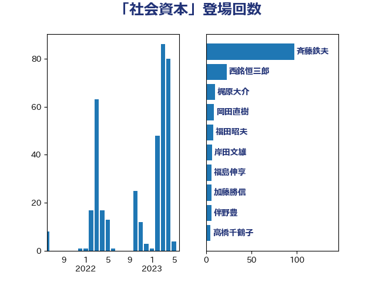

単語「社会資本」

| 斉藤鉄夫 | 公明党 | 97 回 |
| 西銘恒三郎 | 自由民主党 | 23 回 |
| 梶原大介 | 自由民主党 | 10 回 |
| 岡田直樹 | 自由民主党 | 9 回 |
| 福田昭夫 | 立憲民主党 | 8 回 |
| 岸田文雄 | 自由民主党 | 7 回 |
| 福島伸享 | 無所属 | 6 回 |
| 加藤勝信 | 自由民主党 | 6 回 |
| 伴野豊 | 立憲民主党 | 6 回 |
| 高橋千鶴子 | 日本共産党 | 5 回 |
| 石井苗子 | 日本維新の会 | 5 回 |
| 上田英俊 | 自由民主党 | 5 回 |
| 赤羽一嘉 | 公明党 | 4 回 |
| 豊田俊郎 | 自由民主党 | 4 回 |
| 城井崇 | 立憲民主党 | 4 回 |
| 高橋英明 | 日本維新の会 | 3 回 |
| 吉井章 | 自由民主党 | 3 回 |
| 北神圭朗 | 無所属 | 3 回 |
| 中根一幸 | 自由民主党 | 3 回 |
| 馬淵澄夫 | 立憲民主党 | 2 回 |
| 西岡秀子 | 国民民主党 | 2 回 |
| 芳賀道也 | 国民民主党 | 2 回 |
| 米山隆一 | 立憲民主党 | 2 回 |
| 石井浩郎 | 自由民主党 | 2 回 |
| 清水真人 | 自由民主党 | 2 回 |
| 浜口誠 | 国民民主党 | 2 回 |
| 森屋隆 | 立憲民主党 | 2 回 |
| 早坂敦 | 日本維新の会 | 2 回 |
| 国定勇人 | 自由民主党 | 2 回 |
| 伊藤渉 | 公明党 | 2 回 |
| 上田勇 | 公明党 | 2 回 |
| たがや亮 | れいわ新選組 | 2 回 |
| おおつき紅葉 | 立憲民主党 | 2 回 |
| 黄川田仁志 | 自由民主党 | 1 回 |
| 高橋はるみ | 自由民主党 | 1 回 |
| 高木陽介 | 公明党 | 1 回 |
| 長谷川淳二 | 自由民主党 | 1 回 |
| 金村龍那 | 日本維新の会 | 1 回 |
| 金子恭之 | 自由民主党 | 1 回 |
| 金城泰邦 | 公明党 | 1 回 |
| 野田国義 | 立憲民主党 | 1 回 |
| 酒井庸行 | 自由民主党 | 1 回 |
| 進藤金日子 | 自由民主党 | 1 回 |
| 近藤和也 | 立憲民主党 | 1 回 |
| 赤澤亮正 | 自由民主党 | 1 回 |
| 赤嶺政賢 | 日本共産党 | 1 回 |
| 谷田川元 | 立憲民主党 | 1 回 |
| 西田昭二 | 自由民主党 | 1 回 |
| 神津たけし | 立憲民主党 | 1 回 |
| 石垣のりこ | 立憲民主党 | 1 回 |
| 石原正敬 | 自由民主党 | 1 回 |
| 矢倉克夫 | 公明党 | 1 回 |
| 田村貴昭 | 日本共産党 | 1 回 |
| 牧野たかお | 自由民主党 | 1 回 |
| 渡辺猛之 | 自由民主党 | 1 回 |
| 浜田聡 | NHK党 | 1 回 |
| 津島淳 | 自由民主党 | 1 回 |
| 松本剛明 | 自由民主党 | 1 回 |
| 松山政司 | 自由民主党 | 1 回 |
| 日下正喜 | 公明党 | 1 回 |
| 庄子賢一 | 公明党 | 1 回 |
| 平木大作 | 公明党 | 1 回 |
| 岡本三成 | 公明党 | 1 回 |
| 山田勝彦 | 立憲民主党 | 1 回 |
| 小森卓郎 | 自由民主党 | 1 回 |
| 寺田稔 | 自由民主党 | 1 回 |
| 大西健介 | 立憲民主党 | 1 回 |
| 大島敦 | 立憲民主党 | 1 回 |
| 古川康 | 自由民主党 | 1 回 |
| 勝部賢志 | 立憲民主党 | 1 回 |
| 伊藤孝恵 | 国民民主党 | 1 回 |
| 井上貴博 | 自由民主党 | 1 回 |
| 上野賢一郎 | 自由民主党 | 1 回 |
| 三反園訓 | 無所属 | 1 回 |
| 三上えり | 立憲民主党 | 1 回 |
| 一谷勇一郎 | 日本維新の会 | 1 回 |
| こやり隆史 | 自由民主党 | 1 回 |